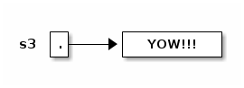
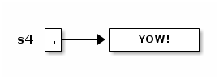
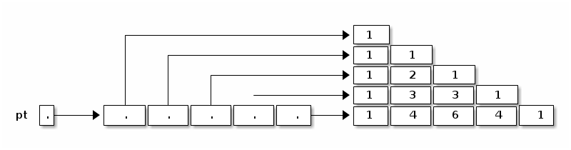
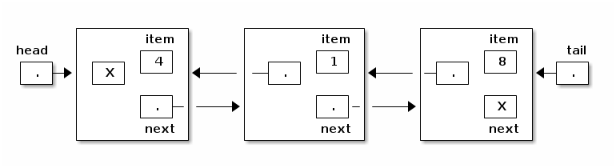
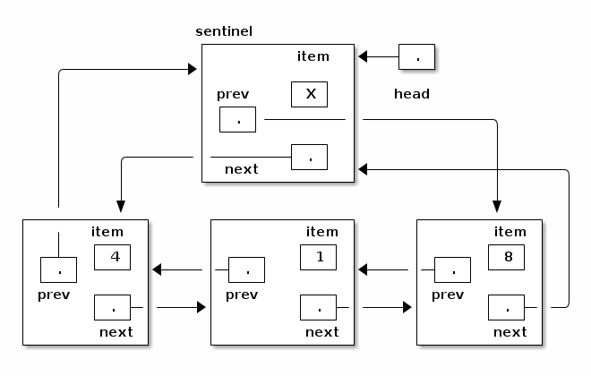

cs61b Lecture Notes
Table of Contents
1 Lecture 2
Today's reading: Sierra & Bates, Chapter 2; pp. 54-58, 154-160, 661, 669.
1.1 OBJECTS AND CONSTRUCTORS
String s; // Step 1: declare a String variable. s = new String(); // Steps 2, 3: construct new empty String; assign it to s.
At this point, s is a variable that references an "empty" String, i.e. a String containing zero characters.

String s = new String(); // Steps 1, 2, 3 combined. s = "Yow!"; // Construct a new String; make s a reference to it.

String s2 = s; // Copy the reference stored in s into s2.

Now s and s2 reference the same object.
s2 = new String(s); // Construct a copy of object; store reference in s2.

Now they refer to two different, but identical, objects.
Think about that. When Java executes that line, it does the following things, in the following order.
- Java looks inside the variables to see where it's pointing.
- Java follows the pointer to the String object.
- Java reads the characters stored in that String object.
- Java creates a new String object that stores a copy of those characters.
- Java stores a reference to the new String object in s2.
We've seen three String constructors:
- new String() constructs an empty string–it's a string, but it contains zero characters.
- "Yow!" constructs a string containing the characters Yow!.
- new String(s) takes a parameter s. Then it makes a copy of the object that s references.
Constructors always have the same name as their class, except the special constructor "stuffinquotes". That's the only exception.
Observe that "new String()" can take no parameters, or one parameter. These are two different constructors–one that is called by "new String()", and one that is called by "new String(s)". (Actually, there are many more than two–check out the online Java API to see all the possibilities.)
1.2 METHODS
Let's look at some methods that aren't constructors.
s2 = s.toUppercase(); // Create a string like s, but in all upper case.

String s3 = s2.concat("!!"); // Also written: s3 = s2 + "!!";

String s4 = "*".concat(s2).concat("*"); // Also written: s4 = "*" + s + "*";

Now, here's an important fact: when Java executed the line
s2 = s.toUppercase();
the String object "Yow!" did not change. Instead, s2 itself changed to reference a new object. Java wrote a new "pointer" into the variable s2, so now s2 points to a different object than it did before.
Unlike in C, in Java Strings are immutable–once they've been constructed, their contents never change. If you want to change a String object, you've got to create a brand new String object that reflects the changes you want. This is not true of all objects; most Java objects let you change their contents.
You might find it confusing that methods like "toUppercase" and "concat" return newly created String objects, though they are not constructors. The trick is that those methods calls constructors internally, and return the newly constructed Strings.
1.3 I/O Classes and Objects in Java
Here are some objects in the System class for interacting with a user:
System.out is a PrintStream object that outputs to the screen. System.in is an InputStream object that reads from the keyboard. [Reminder: this is shorthand for "System.in is a variable that references an InputStream object."]
But System.in doesn't have methods to read a line directly. There is a method called readLine that does, but it is defined on BufferedReader objects.
- How do we construct a BufferedReader? One way is with an InputStreamReader.
- How do we construct an InputStreamReader? We need an InputStream.
- How do we construct an InputStream? System.in is one.
(You can figure all of this out by looking at the constructors in the online Java libraries API–specifically, in the java.io library.)
Why all this fuss?
InputStream objects (like System.in) read raw data from some source (like the keyboard), but don't format the data.
InputStreamReader objects compose the raw data into characters (which are typically two bytes long in Java).
BufferedReader objects compose the characters into entire lines of text.
Why are these tasks divided among three different classes? So that any one task can be reimplemented (say, for improved speed) without changing the other two.
Here's a complete Java program that reads a line from the keyboard and prints it on the screen.
import java.io.*; class SimpleIO { public static void main(String[] arg) throws Exception { BufferedReader keybd = new BufferedReader(new InputStreamReader(System.in)); System.out.println(keybd.readLine()); } }
Don't worry if you don't understand the first three lines; we'll learn the underlying ideas eventually. The first line is present because to use the Java libraries, other than java.lang, you need to "import" them. java.io includes the InputStreamReader and BufferedReader classes.
The second line just gives the program a name, "SimpleIO".
The third line is present because any Java program always begins execution at a method named "main", which is usually defined more or less as above. When you write a Java program, just copy the line of code, and plan to understand it a few weeks from now.
1.4 Classes for Web Access
Let's say we want to read a line of text from the White House Web page. (The line will be HTML, which looks ugly. You don't need to understand HTML.)
How to read a line of text? With readLine on BufferedReader. How to create a BufferedReader? With an InputStreamReader. How to create a InputStreamReader? With an InputStream. How to create an InputStream? With a URL.
import java.net.*; import java.io.*; class WHWWW { public static void main(String[] arg) throws Exception { URL u = new URL("http://www.whitehouse.gov/"); InputStream ins = u.openStream(); InputStreamReader isr = new InputStreamReader(ins); BufferedReader whiteHouse = new BufferedReader(isr); System.out.println(whiteHouse.readLine()); } }
1.5 Postscript: Object-Oriented Terminology (not examinable)
In the words of Turing Award winner Nicklaus Wirth, "Object-oriented programming (OOP) solidly rests on the principles and concepts of traditional procedural programming. OOP has not added a single novel concept … along with the OOP paradigm came an entirely new terminology with the purpose of mystifying the roots of OOP." Here's a translation guide.
| Procedural Programming | Object-Oriented Programming |
|---|---|
| record / structure | object |
| record type | class |
| extending a type | declaring a subclass |
| procedure | method |
| procedure call | sending a message to the method [ack! phthhht!] |
I won't ever talk about "sending a message" in this class. I think it's a completely misleading metaphor. In computer science, message-passing normally implies asynchrony: that is, the process that sends a message can continue executing while the receiving process receives the message and acts on it. But that's NOT what it means in object-oriented programming: when a Java method "sends a message" to another method, the former method is frozen until the latter methods completes execution, just like with procedure calls in most languages. But you should probably know that this termology exists, much as it sucks, because you'll probably run into it sooner or later.
2 Lecture 3
Today's reading: Sierra & Bates, pp. 71-74, 76, 85, 240-249, 273-281, 308-309.
2.1 DEFINING CLASSES
An object is a repository of data. Fields are variables that hold the data stored in objects. Fields in objects are also known as instance variables. In Java, fields are addressed much like methods are, but fields never have parameters, and no parentheses appear after them. For example, suppose that amanda is a Human object. Then amanda.introduce() is a method call, and amanda.age is a field. Let's write a class definition for the Human class.
class Human { public int age; // The Human's age (an integer). public String name; // The Human's name. public void introduce() { // This is a _method definition_. System.out.println("I'm " + name + " and I'm " + age + " years old."); } }
"age" and "name" are both fields of a Human object. Now that we've defined the Human class, we can construct as many Human objects as we want. Each Human object we create can have different values of age and name. We might create amanda by executing the following code.
Human amanda = new Human(); // Create amanda. amanda.age = 6; // Set amanda's fields. amanda.name = "Amanda"; amanda.introduce(); // _Method call_ has amanda introduce herself.

The output is: I'm Amanda and I'm 6 years old.
Why is it that, inside the definition of introduce(), we don't have to write "amanda.name" and "amanda.age"? When we invoke "amanda.introduce()", Java remembers that we are calling introduce() on the object that "amanda" references. The methods defined inside the Human class remember that we're referring to amanda's name and age. If we had written "rishi.introduce()", the introduce method would print rishi's name and age instead. If we want to mix two or more objects, we can.
class Human { // Include all the stuff from the previous definition of Human here. public void copy(Human original) { age = original.age; name = original.name; } }
Now, "amanda.copy(rishi)" copies rishi's fields to amanda.
2.2 Constructors
Let's write a constructor, a method that constructs a Human. The constructor won't actually contain code that does the creating; rather, Java provides a brand new object for us right at the beginning of the constructor, and all you have to write (if you want) in the constructor is code to initialize the new object.
class Human { // Include all the stuff from the previous definitions here. public Human(String givenName) { age = 6; name = givenName; } }
Notice that the constructor is named "Human", and it returns an object of type "Human". This constructor is called whenever we write "new Human(s)", where s is a String reference. Now, we can shorten amanda's coming-out party to
Human amanda = new Human("Amanda"); amanda.introduce();
These lines accomplish precisely the same result as amanda's previous four lines.
You might ask…why were we able to create a Human object before we wrote a constructor? Java provides every class with a default constructor, which takes no parameters and does no initializing. Hence, when we wrote
Human amanda = new Human();
we created a new, blank Human. If the default constructor were explicitly written, it would look like this:
public Human() { }
Warning: if you write your own Human constructor, even if it takes parameters, the default constructor goes away. If you want to have the default constructor and another constructor, you must define both explicitly.
You can override the default constructor by explicitly writing your own constructor with no parameters.
class Human { // Include all the stuff from the previous definitions here. public Human() { age = 0; name = "Untitled"; } }
2.3 The "this" Keyword
A method invocation, like "amanda.introduce()", implicitly passes an object (in this example, amanda) as a parameter called "this". So we can rewrite our last constructor as follows without changing its meaning.
public Human() { this.age = 0; this.name = "Untitled"; }
In this case, "this" is optional. However, if the parameters or local variables of a method have the same name as the fields of an object, then the former have priority, and the "this" keyword is needed to refer to the object's fields.
public void change(int age) { String name = "Tom"; this.age = age; this.name = name; }
When we call "amanda.change(11)", "this" is assigned the same value as "amanda" before the change() method begins execution.

Now, when Java executes "this.age = age", it overwrites the 6 with an 11. When Java executes "this.name = name", it overwrites amanda's name as below.

A statement like "this = amanda;" will trigger a compile-time error.
2.4 The "static" Keyword
A static field is a single variable shared by a whole class of objects; its value does not vary from object to object. For example, if "numberOfHumans" is the number of Human objects that have been constructed, it is not appropriate for each object to have its own copy of this number; every time a new Human is created, we would have to update every Human.
If we declare a field "static", there is just one field for the whole class. Static fields are also called class variables.
class Human { public static int numberOfHumans; public int age; public String name; public Human() { numberOfHumans++; // The constructor increments the number by one. } }
If we want to look at the variable numberOfHumans from another class, we write it in the usual notation, but we prefix it with the class name rather than the name of a specific object.
int kids = Human.numberOfHumans / 4; // Good. int kids = amanda.numberOfHumans / 4; // This works too, but has nothing to // do with amanda specifically. Don't // do this; it's bad (confusing) style.
System.in and System.out are other examples of static fields.
Methods can be static too. A static method doesn't implicitly pass an object as a parameter.
class Human { ... public static void printHumans() { System.out.println(numberOfHumans); } }
Now, we can call "Human.printHumans()" from another class. We can also call "amanda.printHumans()", and it works, but it's bad style, and amanda will NOT be passed along as "this".
The main() method is always static, because when we run a program, we are not passing an object in.

Any attempt to reference "this" will cause a compile-time error.
2.5 Lifetimes of Variables
- A local variable (declared in a method) is gone forever as soon as the method in which it's declared finishes executing. (If it references an object, the object might continue to exist, though.)
- An instance variable (non-static field) lasts as long as the object exists. An object lasts as long as there's a reference to it.
- A class variable (static field) lasts as long as the program runs.
3 Lecture 4
Today's reading: S&B pp. 10-14, 49-53, 75, 78-79, 86, 117, 286-287, 292, 660.
3.1 PRIMITIVE TYPES
Not all variables are references to objects. Some variables are primitive types, which store values like "3", "7.2", "h", and "false". They are:
| byte: | A 8-bit integer in the range -128…127. (One bit is the sign.) |
| short: | A 16-bit integer in the range -32768…32767. |
| int: | A 32-bit integer in the range -2147483648…2147483647. |
| long: | A 64-bit integer, range -9223372036854775808…9223372036854775807. |
| double: | A 64-bit floating-point number like 18.355625430920409. |
| float: | A 32-bit floating-point number; has fewer digits of precision. |
| boolean: | "true" or "false". |
| char: | A single character. |
long values are written with an L on the end: long x = 43L; This tells the compiler to internally write out "43" in a 64-bit format. double and float values must have a decimal point: double y = 18.0; float values are written with an f at the end: float f = 43.9f;
| Object types | Primitive types | |
|---|---|---|
| Variable contains a | reference | value |
| How defined? | class definition | built into Java |
| How created? | "new" | "6", "3.4", "true" |
| How initialized? | constructor | default (usually zero) |
| How used? | methods | operators ("+", "*", etc.) |
Operations on int, long, short, and byte types.
-x x * y x + y x / y <-- rounds toward zero (drops the remainder). x - y x % y <-- calculates the remainder of x / y.
Except for "%", these operations are also available for doubles and floats. Floating-point division ("/") doesn't round to an integer, but it does round off after a certain number of bits determined by the storage space.
The java.lang library has more operations in…
- the Math class.
x = Math.abs(y); // Absolute value. Also see Math.sqrt, Math.sin, etc.
- the Integer class.
int x = Integer.parseInt("1984"); // Convert a string to a number.
- the Double class.
double d = Double.parseDouble("3.14");
Converting types: integers can be assigned to variables of longer types.
int i = 43; long l = 43; // Okay, because longs are a superset of ints. l = i; // Okay, because longs are a superset of ints. i = l; // Compiler ERROR. i = (int) l; // Okay.
The string "(int)" is called a cast, and it casts the long into an int. In the process, high bits will be lost if l does not fit in the range -2147483648… 2147483647 Java won't let you compile "i = l" because it's trying to protect you from accidentally creating a nonsense value and a hard-to-find bug. Java requires you to explicitly cast longs to ints to show your acknowledgment that you may be destroying information.
Similarly, "float f = 5.5f; double d = f;" is fine, but you need an explicit cast for "double d = 5.5; float f = (float) d;". Integers (even longs) can be directly assigned to floating-point variables (even floats) without a cast, but the reverse requires a cast because the number is truncated to an integer.
3.2 Boolean Values
A boolean value is either "true" or "false". Booleans have operations of their own, signified "&&" (and), "||" (or), and "!" (not).
| a | b | a && b | a | | b | !a |
|---|---|---|---|---|
| false | false | false | false | true |
| false | true | false | true | |
| true | false | false | true | false |
| true | true | true | true |
Boolean values can be specified directly ("true", "false") or be created by the comparison operators "==", "<", ">", "<=", ">=", "!=" (not equal to).
boolean x = 3 == 5; // x is now false. x = 4.5 >= 4.5; // x is now true. x = 4 != 5 - 1; // x is now false. x = false == (3 == 0); // x is now true.
3.3 CONDITIONALS
An "if" statement uses a boolean expression to decide whether to execute a set of statements. The form is
if (boolValue) {
statements;
}
The statements are executed if and only if "boolValue" is "true". The parentheses around the boolean expression are required (for no good reason).
boolean pass = score >= 75; if (pass) { output("You pass CS 61B"); } else { // The following line executes if and only if score < 75. output("You are such an unbelievable loser"); }
if-then-else clauses can be (1) nested and (2) daisy-chained. Nesting allows you to build decision trees. Daisy-chaining allows you to present more than two alternatives. For instance, suppose you want to find the maximum of three numbers.
if (x > y) { if (x > z) { maximum = x; } else { maximum = z; } } else if (y > z) { maximum = y; } else { maximum = z; }
Some long chains of if-then-else clauses can be simplified by using a "switch" statement. "switch" is appropriate only if every condition tests whether a variable x is equal to some constant.
switch (month) { | if (month == 2) { case 2: | days = 28; days = 28; | } else if ((month == 4) || (month == 6) || break; | (month == 9) || (month == 11)) { case 4: | days = 30; case 6: | } else { case 9: | days = 31; case 11: | } days = 30; | break; default: days = 31; break; } // These two code fragments do exactly the same thing.
IMPORTANT: "break" jumps to the end of the "switch" statement. If you forget a break statement, the flow of execution will continue right through past the next "case" clause, which is why cases 4, 6, and 9 work right. If month == 12 in the following example, both Strings are printed.
switch (month) { case 12: output("It's December."); // Just keep moving right on through. case 1: case 2: case 11: output("It's cold."); }
However, this is considered bad style, because it's hard to read and understand. If there's any chance that other people will need to read or modify your code (which is the norm when you program for a business), don't code it like this. Use break statements in the switch, and use subroutines to reuse code and clarify the control flow.
Observe that the last example doesn't have a "default:" case. If "month" is not 1 nor 2 nor 11 nor 12, Java jumps right to the end of the "switch" statement (just past the closing brace) and continues execution from there.
3.4 THE "return" KEYWORD
Like conditionals, "return" affects the flow of control of a program. It causes a method to end immediately, so that control returns to the calling method.
Here's a recursive method that prints the numbers from 1 to x.
public static void oneToX(int x) { if (x < 1) { return; } oneToX(x - 1); System.out.println(x); }
The return keyword serves a dual purpose: it is also the means by which a function returns a value. A function is a method that is declared to return a non-void type. For instance, here's a function that returns an int.
public int daysInMonth(int month) { switch (month) { case 2: return 28; case 4: case 6: case 9: case 11: return 30; default: return 31; } }
The "return" value can be an expression. Some examples:
return x + y - z; return car.velocity(time);
4 Lecture 5
Today's reading: Sierra & Bates pp. 59-62, 83, 114-116, 293-300, 670.
4.1 LOOPS
4.1.1 "while" Loops
A "while" statement is like an "if" statement, but the body of the statement is executed repeatedly, as long as the condition remains true. The following example tests whether n is a prime number by attempting to divide it by every integer in the range 2…n - 1.
public static boolean isPrime(int n) { int divisor = 2; while (divisor < n) { _ <- "divisor < n" is the _loop_condition_. if (n % divisor == 0) { | return false; | These lines inside the braces } | are called the _loop_body_. divisor++; _| } return true; }
Here's how the loop executes.
- When Java reaches this "while" loop, it tests whether the loop condition "divisor < n" is true.
- If divisor < n, Java executes the loop body {in braces}.
- When Java finishes the loop body (i.e. after executing "divisor++"), it tests again whether "divisor < n" is true.
- If it's still true, Java jumps back up to the beginning of the loop body and executes it again.
- If Java tests the loop condition and finds that "divisor < n" is false, Java continues execution from the next line of code after the loop body.
An iteration is a pass through the loop body. In this example, if n is 2 or less, the loop body won't iterate even once.
4.1.2 "for" Loops
"for" loops are a convenient shorthand that can be used to write some "while" loops in a more compact way. The following "for" loop is equivalent to the following "while" loop.
for (initialize; condition; next) { | initialize; statements; | while (condition) { } | statements; | next; | }
By convention, the "initialize" and "next" are both expressions that affect a variable that changes every loop iteration and is central to the test. Most commonly, "for" statements are used to iterate while advancing an index variable over a fixed range of values. isPrime can be rewritten thus:
public static boolean isPrime(int n) { for (int divisor = 2; divisor < n; divisor++) { _ if (n % divisor == 0) { | return false; | Loop body. } _| } return true; }
A common mistake among beginning Java and C programmers is to get the condition wrong and do one loop iteration too few. For example, suppose you want to print all the prime numbers in the range 2…n.
public static void printPrimes(int n) { int i; for (i = 2; i < n; i++) { // ERROR!!! Condition should be i <= n. if (isPrime(i)) { System.out.print(" " + i); } } }
Suppose we correct this method so the loop condition is "i <= n". Think carefully: what is the value of i when the printPrimes method ends?
We'll come back to iteration, but first let's investigate something more interesting to iterate on.
4.2 ARRAYS
An array is an object consisting of a numbered list of variables, each of which is a primitive type or a reference to another object. The variables in an array are always indexed from zero in increments of one. For example, here is an array of characters.

Like any object, an array is only useful if we can reference it, usually through some reference variable like "c" above. We declare c thusly:
char[] c; // Reference to an array (of any length) of characters.
We can construct an array of four characters as follows.
c = new char[4];
Now that we have an array object, we may fill in its values by indexing c.
c[0] = 'b'; // Store the character 'b' at index 0. c[1] = 'l'; c[2] = 'u'; c[3] = 'e';
The characters in a four-element array are indexed from 0 to 3. If we try to address any index outside this range, we will trigger a run-time error.
c[4] = 's'; // Program stops with ArrayIndexOutOfBoundsException
A run-time error is an error that doesn't show up when you compile the code, but does show up later when you run the program and the Java Virtual Machine tries to access the out-of-range index.
When c references an array, you can find out its length by looking at the field "c.length". You can never assign a value to the "length" field, though. Java will give you a compile-time error if you try.
4.3 Primes Revisited
The printPrimes method is embarrassingly slow when n is large. Arrays can help us write a faster method to identify the primes from 2 to n.
The method uses an ancient algorithm called the Sieve of Eratosthenes. All integers are assumed prime until proven composite. The algorithm iterates through all possible divisors, and marks as non-prime every integer divisible by a given divisor. Here's the beginning of the method.
public static void printPrimes(int n) { boolean[] prime = new boolean[n + 1]; // Numbered 0...n. int i; for (i = 2; i <= n; i++) { prime[i] = true; // Prime until proven composite. }
Why did we construct an array of length n + 1? Because if we'd constructed an array of length n, its elements would be numbered from 0 to n - 1. But we'd like to have an element numbered n.
To continue the method, we iterate over all possible divisors from 2 to the square root of n. For each prime value of divisor, we mark as non-prime all integers divisible by divisor, except divisor itself.
for (int divisor = 2; divisor * divisor <= n; divisor++) { if (prime[divisor]) { for (i = 2 * divisor; i <= n; i = i + divisor) { prime[i] = false; // i is divisible by divisor. } } }
Math question: why do we only need to consider divisors up to the square root of n?
Finally, we print every integer from 2 to n that hasn't been marked non-prime.
for (i = 2; i <= n; i++) { if (prime[i]) { System.out.print(" " + i); } }
Observe that elements 0 and 1 of the array are never used. A tiny bit of memory is wasted, but the readability of the code is better for it.
4.4 Multi-Dimensional Arrays
A two-dimensional array is an array of references to arrays. A three- dimensional array is an array of arrays of arrays. As an example, consider Pascal's Triangle.
1 <-- row 0
1 1
1 2 1
1 3 3 1
1 4 6 4 1
1 5 10 10 5 1 <-- row 5
Each entry is the sum of the two nearest entries in the row immediately above. If the rows are numbered from zero, row i represents the coefficients of the polynomial (x + 1)i. For example, (x + 1)4 = x4 + 4x3 + 6x2 + 4x + 1.
The following method returns an array of arrays of ints that stores the first n rows of Pascal's Triangle.
public static int[][] pascalTriangle(int n) { int[][] pt = new int[n][];
Here, we've just declared pt to reference an array of arrays, and constructed an array for it to reference. However, the arrays that this array will reference do not yet exist. They are constructed and filled in by the following loop.
for (int i = 0; i < n; i++) { pt[i] = new int[i + 1]; // Construct row i. pt[i][0] = 1; // Leftmost value of row i. for (int j = 1; j < i; j++) { pt[i][j] = pt[i - 1][j - 1] + pt[i - 1][j]; // Sum 2 entries above. } pt[i][i] = 1; // Rightmost value of row i. } return pt;
Our array objects look like this:

5 Lecture 6
Today's reading: Sierra & Bates pp. 282-285.
5.1 MORE ARRAYS
5.2 Automatic Array Construction
Last lecture, we used a loop to construct all the arrays that the top-level array references. This was necessary to construct a triangular array. But if you want a rectangular multi-dimensional array, rather than a triangular one, Java can construct all of the arrays for you at once.
int[][] table = new int[x][y];
This declaration constructs an array of x references to arrays. It also constructs x arrays of y ints. The variable "table" references the array of arrays; and each entry in the array of arrays references one of the arrays of ints. All the arrays are constructed for you at once. Similarly, Java can construct three- or ten-dimensional arrays for you, memory permitting.
We could have used a square array to store Pascal's Triangle, but that would have unnecessarily wasted memory. If you have enough memory, you might not care.
When you declare a variable, you can also construct array entries by using initializers.
Human[] b = {amanda, rishi, new Human("Paolo")}; int[][] c = {{7, 3, 2}, {x}, {8, 5, 0, 0}, {y + z, 3}};
In the second example, Java constructs a non-rectangular two-dimensional array, composed of one array of arrays and four arrays of ints.
Sadly, you can only use this notation in a declaration. You can't write
d = {3, 7}; // Compile-time ERROR.
f({1, 2, 3}); // Compile-time ERROR.
Another subtlety of array declarations is the following.
int[] a, b, c; // a, b, and c all reference arrays. int a[], b, c[][]; // a is 1D; c is 2D; b is not a reference/array. int[] a, b[]; // a references a 1D array; b references a 2D array.
Arrays of Objects
When you construct a multi-dimensional array, Java can construct all the arrays for you. But when you construct an array of objects, Java does not construct the objects automatically. The array contains space for references to the objects. You must construct the objects yourself.
String[] sentence = new String[3]; sentence[0] = "Word"; sentence[2] = new String();

main()'s Parameter
What is the array of Strings that the main() method takes as a parameter? It's a list of command-line arguments sent to your Java program, prepared for you by Java. Consider the following program.
class Echo { public static void main(String[] args) { for (int i = 0; i < args.length; i++) { System.out.println(args[i]); } } }
If we compile this and type "java Echo kneel and worship Java", java prints

5.3 MORE LOOPS
5.3.1 "do" Loops
A "do" loop has just one difference from a "while" loop. If Java reaches a "do" loop, it always executes the loop body at least once. Java doesn't check the loop condition until the end of the first iteration. "do" loops are appropriate for any loop you always want executed at least once, especially if the variables in the condition won't have meaningful assignments until the loop body has been executed.
do { s = keybd.readLine(); process(s); } while (s.length() > 0); // Exit loop if s is an empty String.
5.3.2 The "break" and "continue" Statements
A "break" statement immediately exits the innermost loop or "switch" statement enclosing the "break", and continues execution at the code following the loop or "switch".
In the loop example above, we might want to skip "process(s)" when s is a signal to exit (in this case, an empty String). We want a "time-and-a-half" loop–we want to enter the loop at a different point in the read-process cycle than we want to exit the loop at. Here are two alternative loops that do the right thing. They behave identically. Each has a different disadvantage.
s = keybd.readLine(); | while (true) { // Loop forever. while (s.length() > 0) { | s = keybd.readLine(); process(s); | if (s.length() == 0) { s = keybd.readLine(); | break; } | } | process(s); |} /*Disadvantage: The line "s = keybd..." | is repeated twice. It's not really | a disadvantage here, but if input | Disadvantage: Somewhat obfuscated for took 100 lines of code, the | the reader, because the loop isn't duplication would make the code harder | aligned with its natural endpoint. to maintain. Why? Because a programmer improving the code might change one copy of the duplicated code without noticing the need to change the other to match.*/
Some loops have more than one natural endpoint. Suppose we want to iterate the read-process loop at most ten times. In the example at left below, the "break" statement cannot be criticized, because the loop has two natural endpoints. We could get rid of the "break" by writing the loop as at right below, but the result is longer and harder to read.
for (int i = 0; i < 10; i++) { | int i = 0; s = keybd.readLine(); | do { if (s.length() == 0) { | s = keybd.readLine(); break; | if (s.length() > 0) { } | process(s); process(s); | } } | i++; | } while ((i < 10) && | (s.length() > 0));
There are anti-break zealots who claim that the loop on the right is the "correct" way to do things. I disagree, because the left loop is clearly more readable.
Some of the zealots feel this way because "break" statements are a little bit like the "go to" statements found in some languages like Basic and Fortran (and the machine language that microprocessors really execute). "go to" statements allow you to jump to any line of code in the program. It sounds like a good idea at first, but it invariably leads to insanely unmaintainable code. For example, what happens if you jump to the middle of a loop? Turing Award winner Edsger Dijkstra wrote a famous article in 1968 entitled "Go To Statement Considered Harmful", which is part of the reason why many modern languages like Java don't have "go to" statements.
Both "break" and "return" are limited forms of "go to" statements. Their limitations prohibit the worst abuses of "go to". They allow control flow to jump in your program in ways that are straightforward to understand.
WARNING: It's easy to forget exactly where a "break" statement will jump to. For example, "break" does not jump to the end of the innermost enclosing "if" statement. An AT&T programmer introduced a bug into telephone switching software in a procedure that contained a "switch" statement, which contained an "if" clause, which contained a "break", which was intended for the "if" clause, but instead jumped to the end of the "switch" statement. As a result, on January 15, 1990, AT&T's entire U.S. long distance service collapsed for eleven hours. (That code was actually written in C, but Java and C use identical syntax and semantics for loops, "switch", and "break".)
The "continue" statement is akin to the "break" statement, except (1) it only applies to loops, and (2) it jumps to the end of the loop body but it doesn't necessarily exit the loop; another iteration will commence if the loop condition is satisfied.
Finally, I told you that "for" loops are identical to certain "while" loops, but there's actually a subtle difference when you use "continue". What's the difference between the following two loops?
int i = 0; | for (int i = 0; i < 10; i++) { while (i < 10) { | if (condition(i)) { if (condition(i)) { | continue; continue; | } } | call(i); call(i); | } i++; | } |
Answer: when "continue" is called in the "while" loop, "i++" is not executed. In the "for" loop, however, i is incremented at the end of every iteration, even iterations where "continue" is called.
5.4 CONSTANTS
Java's "final" keyword is used to declare a value that can never be changed. If you find yourself repeatedly using a numerical value with some "meaning" in your code, you should probably turn it into a "final" constant.
BAD: if (month == 2) { GOOD: public final static int FEBRUARY = 2; // Usually near top of class. ... if (month == FEBRUARY) {
Why? Because if you ever need to change the numerical value assigned to February, you'll only have to change one line of code, rather than hundreds.
You can't change the value of FEBRUARY after it is declared and initialized. If you try to assign another value to FEBRUARY, you'll have a compiler error.
The custom of rendering constants in all-caps is long-established and was inherited from C. (The compiler does not require it, though.)
For any array x, "x.length" is a "final" field.
You can declare local parameters "final" to prevent them from being changed.
void myMethod(final int x) { x = 3; // Compiler ERROR. Don't mess with X's! }
"final" is usually used for class variables (static fields) and parameters, but it can be used for instance variables (non-static fields) and local variables too. It only makes sense for these to be "final" if the variable is declared with an initializer that calls a method or constructor that doesn't always return the same value.
class Bob { public final long creationTime = System.currentTimeMillis(); }
When objects of the Bob class are constructed, they record the time at that moment. Afterward, the creationTime can never be changed.
5.5 SCOPE
The scope of a variable is the portion of the program that can access the variable. Here are some of Java's scoping rules.
- Local variables and parameters are in scope only inside the method that declares them. Furthermore, a local variable is in scope only from the variable declaration down to the innermost closing brace that encloses it. A local variable declared in the initialization part of a "for" loop is in scope only in the loop body.
- Class variables (static fields) are in scope everywhere in the class, except when shadowed by a local variable or parameter of the same name.
- Instance variables (non-static fields) are in scope in non-static methods of the class, except when shadowed.
6 Lecture 7
Today's reading: Goodrich & Tamassia, Section 3.2.
6.1 LISTS
Let's consider two different data structures for storing a list of things: an array and a linked list.
An array is a pretty obvious way to store a list, with a big advantage: it enables very fast access of each item. However, it has two disadvantages.
First, if we want to insert an item at the beginning or middle of an array, we have to slide a lot of items over one place to make room. This takes time proportional to the length of the array.
Second, an array has a fixed length that can't be changed. If we want to add items to the list, but the array is full, we have to allocate a whole new array and move all the ints from the old array to the new one.
public class AList { int a[]; int lastItem; public AList() { a = new int[10]; // The number "10" is arbitrary. lastItem = -1; } public void insertItem(int newItem, int location) { int i; if (lastItem + 1 == a.length) { // No room left in the array? int b[] = new int[2 * a.length]; // Allocate a new array, twice as long. for (i = 0; i <= lastItem; i++) { // Copy items to the bigger array. b[i] = a[i]; } a = b; // Replace the too-small array with the new one. } for (i = lastItem; i >= location; i--) { // Shift items to the right. a[i + 1] = a[i]; } a[location] = newItem; lastItem++; } }
6.2 LINKED LISTS (a recursive data type)
We can avoid these problems by choosing a Scheme-like representation of lists. A linked list is made up of nodes. Each node has two components: an item, and a reference to the next node in the list. These components are analogous to "car" and "cdr". However, our node is an explicitly defined object.
public class ListNode { // ListNode is a recursive type public int item; public ListNode next; // Here we're using ListNode before } // we've finished declaring it.
Let's make some ListNodes.
ListNode l1 = new ListNode(), l2 = new ListNode(), l3 = new ListNode(); l1.item = 7; l2.item = 0; l3.item = 6;

Now let's link them together.
l1.next = l2; l2.next = l3;
What about the last node? We need a reference that doesn't reference anything. In Java, this is called "null".
l3.next = null;

To simplify programming, let's add some constructors to the ListNode class.
public ListNode(int i, ListNode n) { item = i; next = n; } public ListNode(int i) { this(i, null); }
These constructors allow us to emulate Scheme's "cons" operation.
ListNode l1 = new ListNode(7, new ListNode(0, new ListNode(6)));
6.3 Linked lists vs. array lists
Linked lists have several advantages over array-based lists. Inserting an item into the middle of a linked list takes just a small constant amount of time, if you already have a reference to the previous node (and don't have to walk through the whole list searching for it). The list can keep growing until memory runs out.
The following method inserts a new item into the list immediately after "this".
public void insertAfter(int item) { next = new ListNode(item, next); } l2.insertAfter(3);

However, linked lists have a big disadvantage compared to arrays. Finding the nth item of an array takes a tiny, constant amount of time. Finding the nth item of a linked list takes time proportional to n. You have to start at the head of the list and walk forward n - 1 nodes, one "next" at a time.
Many of the data structures we will study in this class will be attempts to find a compromise between arrays and linked lists. We'll learn data structures that are fast for both arbitrary lookups (like arrays) and arbitrary insertions (like linked lists).
6.4 Lists of Objects
For greater generality, let's change ListNodes so that each node contains not an int, but a reference to any Java object. In Java, we can accomplish this by declaring a reference of type Object.
public class SListNode { public Object item; public SListNode next; }
The "S" in "SListNode" stands for singly-linked. This will make sense when we contrast these lists with doubly-linked lists later. You'll see the SListNode class in next week's lab and homework.
6.5 A List Class
There are two problems with SListNodes.
(1) Suppose x and y are pointers to the same shopping list. Suppose we insert a new item at the beginning of the list thusly:
x = new SListNode("soap", x);
y doesn't point to the new item; y still points to the second item in x's list. If y goes shopping for x, he'll forget to buy soap.
(2) How do you represent an empty list? The obvious way is "x = null". However, Java won't let you call a SListNode method–or any method–on a null object. If you write "x.insertAfter(item)" when x is null, you'll get a run-time error, even though x is declared to be a SListNode. (There are good reasons for this, which you'll learn later in the course.)
The solution is a separate SList class, whose job is to maintain the head (first node) of the list. We will put many of the methods that operate on lists in the SList class, rather than the SListNode class.
public class SList { private SListNode head; // First node in list. private int size; // Number of items in list. public SList() { // Here's how to represent an empty list. head = null; size = 0; } public void insertFront(Object item) { head = new SListNode(item, head); size++; } }

Now, when you call x.insertFront("fish"), every reference to that SList can see the change.

Another advantage of the SList class is that it can keep a record of the SList's size (number of SListNodes). Hence, the size can be determined more quickly than if the SListNodes had to be counted.
7 Lecture 8
Today's reading: Goodrich & Tamassia, Section 3.3.
7.1 THE "public" AND "private" KEYWORDS
Thus far, we've usually declared fields and methods using the "public" keyword. However, we can also declare a field or method "private". A private method or field is invisible and inaccessible to other classes, and can be used only within the class in which the field or method is declared.
Why would we want to make a field or method private?
- To prevent data within an object from being corrupted by other classes.
- To ensure that you can improve the implementation of a class without causing other classes that depend on it to fail.
In the following example, EvilTamperer tries to get around the error checking code of the Date class by fiddling with the internals of a Date object.
public class Date { | public class EvilTamperer { private int day; | public void tamper() { private int month; | Date d = new Date(1, 1, 2006); | private void setMonth(int m) { | d.day = 100; // Foiled!! month = m; | d.setMonth(0); // Foiled again!! } | } | } public Date(int month, int day) { | [Implementation with | error-checking code here.] | } }
However, javac won't compile EvilTamperer, because the Date class has declared its vulnerable parts "private". setMonth is an internal helper method used within the Date class, whereas the Date constructor is a public part of the interface of the Date class. Error-checking code in the constructor ensures that invalid Dates are not constructed.
Here are some important definitions.
The interface of a class is a set of prototypes for public methods (and sometimes public fields), plus descriptions of the methods' behaviors.
An Abstract Data Type (ADT) is a class that has a well-defined interface, but its implementation details are firmly hidden from other classes. That way, you can change the implementation of a class without jeopardizing the programs that depend on it. The Date class is an ADT. We'll implement lots of ADTs this semester.
An invariant is a fact about a data structure that is always true (assuming the code is bug-free), no matter what methods are called by external classes. For example, the Date ADT enforces the invariant that a Date object always represents a valid date. An invariant is enforced by allowing access to certain fields only through method calls.
An ADT is often a good thing to aspire to. In most of your classes, you should declare all fields private, as well as helper functions meant only for internal use, so that you can maintain sensible invariants on your data structures.
However, not all classes are ADTs! Some classes are nothing more than data storage units, and do not need to enforce any invariants. In such classes, all fields may be declared public.
7.2 The SList ADT
Last lecture, I created an SList class to solve the problems of representing empty lists and inserting items at the beginning of a list. Today, I want to introduce another advantage of the SList class.
We want the SList ADT to enforce two invariants:
- An SList's "size" variable is always correct.
- A list is never circularly linked; there is always a tail node whose "next" reference is null.
Both these goals are accomplished by making sure that only the methods of the SList class can change the lists' internal data structures. SList ensures this by two means:
- The fields of the SList class (head and size) are declared "private".
- No method of SList returns an SListNode.
The first rule is necessary so that the evil tamperer can't change the fields and corrupt the SList or violate invariant (1). The second rule prevents the evil tamperer from changing list items, truncating a list, or creating a cycle in a list, thereby violating invariant (2).
7.3 DOUBLY-LINKED LISTS
As we saw last class, inserting an item at the front of a linked list is easy. Deleting from the front of a list is also easy. However, inserting or deleting an item at the end of a list entails a search through the entire list, which might take a long time. (Inserting at the end is easy if you have a `tail' pointer, as you will learn in Lab 3, but deleting is still hard.)
A doubly-linked list is a list in which each node has a reference to the previous node, as well as the next node.
class DListNode { | class DList { Object item; | private DListNode head; DListNode next; | private DListNode tail; DListNode prev; | } } |

DLists make it possible to insert and delete items at both ends of the list, taking constant running time per insertion and deletion. The following code removes the tail node (in constant time) if there are at least two items in the DList.
tail.prev.next = null;
tail = tail.prev;
You'll need a special case for a DList with no items. You'll also need a special case for a DList with one item, because tail.prev.next does not exist. (Instead, head needs to be changed.)
Let's look at a clever trick for reducing the number of special cases, thereby simplifying our DList code. We designate one DListNode as a sentinel, a special node that does not represent an item. Our list representation will be circularly linked, and the sentinel will represent both the head and the tail of the list. Our DList class no longer needs a tail pointer, and the head pointer points to the sentinel.
class DList { private DListNode head; private int size; }

The invariants of the DList ADT are more complicated than the SList invariants. The following invariants apply to the DList with a sentinel.
- For any DList d, d.head != null. (There's always a sentinel.)
- For any DListNode x, x.next != null.
- For any DListNode x, x.prev != null.
- For any DListNode x, if x.next == y, then y.prev == x.
- For any DListNode x, if x.prev == y, then y.next == x.
- A DList's "size" variable is the number of DListNodes, NOT COUNTING the sentinel (denoted by "head"), that can be accessed from the sentinel by a sequence of "next" references.
An empty DList is represented by having the sentinel's prev and next fields point to itself.
Here's an example of a method that removes the last item from a DList.
public void removeBack() { if (head.prev != head) { // Do nothing if the DList is empty. head.prev = head.prev.prev; // Sentinel now points to second-last item. head.prev.next = head; // Second-last item now points to sentinel. size--; } }
In Lab 4 and Homework 4, you'll implement more methods for this DList class.
8 Lecture 9
Today's reading: Sierra & Bates pp. 77, 235-239, 258-265, 663.
8.1 THE STACK AND THE HEAP
Java stores stuff in two separate pools of memory: the stack and the heap.
The heap stores all objects, including all arrays, and all class variables (i.e. those declared "static").
The stack stores all local variables, including all parameters.
When a method is called, the Java Virtual Machine creates a stack frame (also known as an activation record) that stores the parameters and local variables for that method. One method can call another, which can call another, and so on, so the JVM maintains an internal stack of stack frames, with "main" at the bottom, and the most recent method call on top.
Here's a snapshot of the stack while Java is executing the SList.insertEnd method. The stack frames are on the left. Everything on the right half of the page is in the heap. Read the stack from bottom to top, because that's the order in which the stack frames were created.

The method that is currently executing (at any point in time) is the one whose stack frame is on top. All the other stack frames represent methods waiting for the methods above them to return before they can continue executing.
When a method finishes executing, its stack frame is erased from the top of the stack, and its local variables are erased forever.
The java.lang library has a method "Thread.dumpStack" that prints a list of the methods on the stack (but it doesn't print their local variables). This method can be convenient for debugging–for instance, when you're trying to figure out which method called another method with illegal parameters.
8.2 Parameter Passing
As in Scheme, Java passes all parameters byvalue. This means that the method has copies of the actual parameters, and cannot change the originals. The copies reside in the method's stack frame for the method. The method can change these copies, but the original values that were copied are not changed.
In this example, the method doNothing sets its parameter to 2, but it has no effect on the value of the calling method's variable a:
method: | STACK (just before the method returns)
|
static void doNothing(int x) { | -----
x = 2; | x | 2 |
} | ----- stack frame for doNothing
|-----------------------------------------
method call: |
| -----
int a = 1; | a | 1 |
doNothing(a); | ----- stack frame for main
When the method call returns, a is still 1. The doNothing method, as its name suggests, failed to change the value of a or do anything relevant at all.
However, when a parameter is a reference to an object, the reference is copied, but the object is not; the original object is shared. A method can modify an object that one of its parameters points to, and the change will be visible everywhere. Here's an example that shows how a method can make a change to an object that is visible to the calling method:
method: | STACK | HEAP
| set3|
class IntBox { | ----- |
public int i; | ib | .-+----------------\
static void set3(IntBox ib) { | ----- | |
ib.i = 3; | | |
} |--------------------| v
| ----- | ------
method call: | b | .-+------------->|i |3|
| ----- main| ------
IntBox b = new IntBox();
set3(b);
For those of you who are familiar with programming languages that have "pass by reference," the example above is as close as you can get in Java. But it's not "pass by reference." Rather, it's passing a reference by value.
Here's an example of a common programming error, where a method tries and fails to make a change that is visible to the calling method. (Assume we've just executed the example above, so b is set up.)
method: | STACK | HEAP
| badSet4|
class IntBox { | ----- | ------
static void badSet4(IntBox ib) { | ib | .-+------------->|i |4|
ib = new IntBox(); | ----- | ------
ib.i = 4; | |
} |--------------------|
| ----- | ------
method call: | b | .-+------------->|i |3|
| ----- main| ------
badSet4(b);
8.3 Binary search
When a method calls itself recursively, the JVM's internal stack holds two or more stack frames connected with that method. Only the top one can be accessed.
Here's a recursive method that searches a sorted array of ints for a particular int. Let i be an array of ints sorted from least to greatest–for instance, {-3, -2, 0, 0, 1, 5, 5}. We want to search the array for the value "findMe". If we find "findMe", we return its array index; otherwise, we return FAILURE.
We could simply check every element of the array, but that would be slow. A better strategy is to check the middle array element first. If findMe is lesser, we know it can only be in the left half of the array; if findMe is greater, we know it can only be in the right half. Hence, we've eliminated half the possibilities with one comparison. We still have half the array to check, so we recursively check the middle element of that half, and so on, cutting the possibilites in half each time. Suppose we search for 1.

The recursion has two base cases.
- If findMe equals the middle element, return its index; in the example above, we return index 4.
- If we try to search a subarray of length zero, the array does not contain "findMe", and we return FAILURE.
public static final int FAILURE = -1; private static int bsearch(int[] i, int left, int right, int findMe) { if (left > right) { return FAILURE; // Base case 2: subarray of size zero. } int mid = (left + right) / 2; // Halfway between left and right. if (findMe == i[mid]) { return mid; // Base case 1: success! } else if (findMe < i[mid]) { return bsearch(i, left, mid - 1, findMe); // Search left half. } else { return bsearch(i, mid + 1, right, findMe); // Search right half. } } public static int bsearch(int[] i, int findMe) { return bsearch(i, 0, i.length - 1, findMe); }
How long does binary search take? Suppose the array has n elements. In one call to bsearch, we eliminate at least half the elements from consideration. Hence, it takes log2 n (the base 2 logarithm of n) bsearch calls to pare down the possibilities to one. Binary search takes time proportional to log2 n. If you're not comfortable with logarithms, please review Goodrich & Tamassia Sections 4.1.2 & 4.1.7.

The stack frames appear at right in the figure above. There are three different local variables named "left" on the stack, three named "right", three named "mid", four named "i", and four named "findMe". While the current invocation of bsearch() is executing, only the topmost copy of "left" is in scope, and likewise for "right" and "mid". The other copies are hidden and cannot be accessed or changed until the current invocation of bsearch() terminates.
Most operating systems give a program enough stack space for a few thousand stack frames. If you use a recursive procedure to walk through a million-node list, Java will try to create a million stack frames, and the stack will run out of space. The result is a run-time error. You should use iteration instead of recursion when the recursion will be very deep.
However, our recursive binary search method does not have this problem. Most modern microprocessors cannot address more than 264 bytes of memory. Even if an array of bytes takes this much space, we will only have to cut the array in half 64 times to run a binary search. There's room on the stack for 64 stack frames, with plenty to spare. In general, recursion to a depth of roughly log n (where n is the number of items in a data structure) is safe, whereas recursion to a depth of roughly n is not.
Unfortunately, binary search can't be used on linked lists. Think about why.
8.4 Scope and Recursion
The scope of a variable is the portion of the program that can access the variable. Here are some of Java's scoping rules.
- Local variables and parameters are in scope only inside the method that declares them, and only for the topmost stack frame. Furthermore, a local variable is in scope only from the variable declaration down to the innermost closing brace that encloses it. A local variable declared in the initialization part of a "for" loop is in scope only in the loop body.
- Class variables (static fields) are in scope everywhere in the class, except when shadowed by a local variable or parameter of the same name.
- Fully qualified class variables ("System.out", rather than "out") are in scope everywhere in the class, and cannot be shadowed. If they're public, they're in scope in all classes.
- Instance variables (non-static fields) are in scope in non-static methods of the class, except when shadowed.
- Fully qualified instance variables ("amanda.name", "this.i") are in scope everywhere in the class, and cannot be shadowed. If they're public, they're in scope in all classes.
9 Lecture 10
Today's reading: All of Chapter 7, plus pp. 28-33, 250-257.
9.1 INHERITANCE
In Lab 3, you modified several methods in the SList class so that a "tail" reference could keep track of the end of the list, thereby speeding up the insertEnd() method.
We could have accomplished the same result without modifying SList–by creating a new class that inherits all the properties of SList, and then changing only the methods that need to change. Let's create a new class called TailList that inherits the fields and methods of the original SList class.
public class TailList extends SList { // The "head" and "size" fields are inherited from SList. private SListNode tail;
This code declares a TailList class that behaves just like the SList class, but has an additional field "tail" not present in the SList class. TailList is said to be a subclass of SList, and SList is the superclass of TailList. A TailList has three fields: head, size, and tail.
A subclass can modify or augment a superclass in at least three ways:
- It can declare new fields.
- It can declare new methods.
- It can override old methods with new implementations.
We've already seen an example of the first. Let's try out the third. The advantage of TailList is that it can perform the insertEnd() method much more quickly than a tail-less SList can. So, let's write a new insertEnd() for TailList, which will override SList's old, slow insertEnd() method.
public void insertEnd(Object obj) { // Your solution to Lab 3 goes here. }
The isEmpty(), length(), nth(), and toString() methods of SList do not need any changes on account of the tail reference. These methods are inherited from SList, and there's no need to rewrite them.
9.2 Inheritance and Constructors
What happens when we construct a TailList? Java executes a TailList constructor, as you would expect, but first it executes the code in the SList() constructor. The TailList constructor should initialize fields unique to TailList. It can also modify the work done by SList() if appropriate.
public TailList() { // SList() constructor called automatically; sets size = 0, head = null tail = null; }
The zero-parameter SList() constructor is always called by default, regardless of the parameters passed to the TailList constructor. To change this default behavior, the TailList constructor can explicitly call any constructor for its superclass by using the "super" keyword.
public TailList(int x) { super(x); tail = null; }
The call to "super()" must be the first statement in the constructor. If a constructor has no explicit call to "super", and its (nearest) superclass has no zero-parameter constructor, a compile-time error occurs. There is no way to tell Java not to call a superclass constructor. You have only the power to choose which of the superclass constructors is called.
9.3 Invoking Overridden Methods
Sometimes you want to override a method, yet still be able to call the method implemented in the superclass. The following example shows how to do this. Below, we want to reuse the code in SList.insertFront, but we also need to adjust the tail reference.
public void insertFront(Object obj) { super.insertFront(obj); // Insert at the front of the list. if (size == 1) { // If necessary, tail = head; // adjust the tail reference. } } }
Unlike superclass constructor invocations, ordinary superclass method invocations need not be the first statement in a method.
9.4 The "protected" Keyword
I lied when I said that we don't need to modify SList. One change is necessary. The "head" and "size" fields in SList must be declared "protected", not "private".
public class SList { protected SListNode head; protected int size; [Method definitions.] }
"protected" is a level of protection somewhere between "public" and "private". A "protected" field is visible to the declaring class and all its subclasses, but not to other classes. "private" fields aren't even visible to the subclasses.
If "head" and "size" are declared private, the method TailList.insertFront can't access them and won't compile. If they're declared protected, insertFront can access them because TailList is a subclass of SList.
When you write an ADT, if you think somebody might someday want to write a subclass of it, declare its vulnerable fields "protected", unless you have a reason for not wanting subclasses to see them. Helper methods often should be declared "protected" as well.
9.5 Class Hierarchies
Subclasses can have subclasses. Subclassing is transitive: if Proletariat is a subclass of Worker, and Student is a subclass of Proletariat, then Student is a subclass of Worker. Furthermore, every class is a subclass of the Object class (including Java's built-in classes like String and BufferedReader.) Object is at the top of every class hierarchy.

That's why the "item" field in each listnode is of type Object: it can reference any object of any class. (It can't reference a primitive type, though.)
9.6 Dynamic Method Lookup
Here's where inheritance gets interesting. Any TailList can masquerade as an SList. An object of class TailList can be assigned to a variable of type SList–but the reverse is not true. Every TailList is an SList, but not every SList is a TailList. It merits repeating:
!!! Every TailList *IS* an SList. !!! For example:
SList s = new TailList(); // Groovy. TailList t = new SList(); // COMPILE-TIME ERROR.
Memorize the following two definitions.
- Static type: The type of a variable.
- Dynamic type: The class of the object the variable references.
In the code above, the static type of s is SList, and the dynamic type of s is TailList. Henceforth, I will often just say "type" for static type and "class" for dynamic type.
When we invoke an overridden method, Java calls the method for the object's dynamic type, regardless of the variable's static type.
SList s = new TailList(); s.insertEnd(obj); // Calls TailList.insertEnd() s = new SList(); s.insertEnd(obj); // Calls SList.insertEnd()
This is called dynamic method lookup, because Java automatically looks up the right method for a given object at run-time. Why is it interesting?
WHY DYNAMIC METHOD LOOKUP MATTERS (Worth reading and rereading)
Suppose you have a method (in any class) that sorts an SList using only SList method calls (but doesn't construct any SLists). Your method now sorts TailLists too, with no changes.
Suppose you've written a class–let's call it RunLengthEncoding–that uses SLists extensively. By changing the constructors so that they create TailLists instead of SLists, your class immediately realizes the performance improvement that TailLists provide–without changing anything else in the RunLengthEncoding class.
9.7 Subtleties of Inheritance
(1) Suppose we write a new method in the TailList class called eatTail(). We can't call eatTail on an SList. We can't even call eatTail on a variable of type SList that references a TailList.
TailList t = new TailList(); t.eatTail(); // Groovy. SList s = new TailList(); // Groovy--every TailList is an SList. s.eatTail(); // COMPILE-TIME ERROR.
Why? Because not every object of class SList has an "eatTail()" method, so Java can't use dynamic method lookup on the variable s.
But if we define eatTail() in SList instead, the statements above compile and run without errors, even if no eatTail() method is defined in class TailList. (TailList inherits eatTail() from SList.)
(2) I pointed out earlier that you can't assign an SList object to a TailList variable. The rules are more complicated when you assign one variable to another.
SList s; TailList t = new TailList(); s = t; // Groovy. t = s; // COMPILE-TIME ERROR. t = (TailList) s; // Groovy. s = new SList(); t = (TailList) s; // RUN-TIME ERROR: ClassCastException.
Why does the compiler reject "t = s", but accept "t = (TailList) s"? It refuses "t = s" because not every SList is a TailList, and it wants you to confirm that you're not making a thoughtless mistake. The cast in the latter statement is your way of reassuring the compiler that you've designed the program to make sure that the SList s will always be a TailList.
If you're wrong, Java will find out when you run the program, and will crash with a "ClassCastException" error message. The error occurs only at run-time because Java cannot tell in advance what class of object s will reference.
Recall that SLists store items of type Object. When they're recovered, they usually have to be cast back to a more specific type before they can be used. Suppose we have a list of Integers. Recall that nth() returns type Object.
int x = t.nth(1).intValue(); // COMPILE-TIME ERROR. int y = ( (Integer) t.nth(1) ).intValue(); // Groovy.
Some methods are defined on every Object, though.
String z = t.nth(1).toString(); // Groovy.
(3) Java has an "instanceof" operator that tells you whether an object is of a specific class. WARNING: The "o" in "instanceof" is not capitalized.
if (s instanceof TailList) { t = (TailList) s; }
This instanceof operation will return false if s is null or doesn't reference a TailList. It returns true if s references a TailList object–even if it's a subclass of TailList.
10 Lecture 11
Today's reading: Sierra & Bates, pp. 95-109, 662.
10.1 equals()
Every class has an equals() method. If you don't define one explictly, you inherit Object.equals(), for which "r1.equals(r2)" returns the same boolean value as "r1 == r2", where r1 and r2 are references. However, many classes override equals() to compare the content of two objects.
Integer (in the java.lang library) is such a class; it stores one private int. Two distinct Integer objects are equals() if they contain the same int. In the following example, "i1 == i2" is false, but "i1.equals(i2)" is true. "i2 == i3" and "i2.equals(i3)" are both true.
IMPORTANT: r1.equals(r2) throws a run-time exception if r1 is null.
There are at least four different degrees of equality.
- Reference equality, ==. (The default inherited from the Object class.)
- Shallow structural equality: two objects are "equals" if all their fields are ==. For example, two SLists whose "size" fields are equal and whose "head" fields point to the same SListNode.
- Deep structural equality: two objects are "equals" if all their fields are "equals". For example, two SLists that represent the same sequence of items (though the SListNodes may be different).
- Logical equality. Two examples: a. Two "Set" objects are "equals" if they contain the same elements, even if the underlying lists store the elements in different orders. b. The Fractions 1/3 and 2/6 are "equals", even though their numerators and denominators are all different.
The equals() method for a particular class may test any of these four levels of equality, depending on what seems appropriate. Let's write an equals() method for SLists that tests for deep structural equality. The following method returns true only if the two lists represent identical sequences of items.
public class SList { public boolean equals(Object other) { if (!(other instanceof SList)) { // Reject non-SLists. return false; } SList o = (SList) other; if (size != o.size) { return false; } SListNode n1 = head; SListNode n2 = o.head; while (n1 != null) { if (!n1.item.equals(n2.item)) { // Deep equality of the items. return false; } n1 = n1.next; n2 = n2.next; } return true; } }
Note that this implementation may fail if the SList invariants have been corrupted. (A wrong "size" field or a loop in an SList can make it fail.)
IMPORTANT: Overriding DOESN'T WORK if we change the signature of the original method, even just to change a parameter to a subclass. In the Object class, the signature is equals(Object), so in the code above, we must declare "other" to be an Object too. If we declare "other" to be an SList, the equals() method will compile but it will NOT override. That means the code
Object s = new SList(); s.equals(s);
will call Object.equals(), not SList.equals(). Dynamic method lookup won't care that s is an SList, because the equals() method above is not eligible to override Object.equals().
Therefore, if you want to override a method, make sure the signature is EXACTLY the same.
10.2 "for each" LOOPS
Java has a "for each" loop for iterating through the elements of an array.
int[] array = {7, 12, 3, 8, 4, 9}; for (int i : array) { System.out.print(i + " "); }
Note that i is not iterating from 0 to 5; it's taking on the value of each array element in turn. You can iterate over arrays of any type this way.
String concat = ""; for (String s : stringArray) { concat = concat + s; }
For some reason, the type declaration must be in the "for" statement. The compiler barfs if you try
int i; for (i : array) { ... }
10.3 TESTING
Complex software, like Project 1, is easier to debug if you write lots of test code. We'll consider three types of testing:
- Modular testing: testing each method and each class separately.
- Integration testing: testing a set of methods/classes together.
- Result verification: testing results for correctness, and testing data structures to ensure they still satisfy their invariants.
10.3.1 Modular Testing
When you write a program and it fails, it can be quite difficult to determine which part of the code is responsible. Even experienced programmers often guess wrong. It's wise to test every method you write individually.
There are two types of test code for modular testing: test drivers and stubs.
(a) Test drivers are methods that call the code being tested, then check the results. In Lab 3 and Homework 3, you've seen test drivers in the SList class that check that your code is doing the right thing.
Both public and private methods should be tested. Hence, a test driver usually needs to be inside the class it tests. In a class intended for use by other classes, the obvious place to put a test driver is in the main() method, as we did in Lab 3 and Homework 3. However, if a class is the entry point for the program, you can't put your test driver in main(). Instead, put it in a method with a name like testDriver(), and then write another class whose main() method calls your test driver.
(b) Stubs are small bits of code that are called by the code being tested. They are often quite short. They serve three purposes.
(i) If you write a method that calls other methods that haven't yet been implemented, you can write simple stubs that fake the missing methods. (ii) Suppose you are having difficulty determining whether a bug lies in a calling method, or a method it calls. You can temporarily replace the callee with a stub that returns controlled results to the caller, so you can see if the caller is responsible for the problem. (iii)Stubs allow you to create repeatable test cases that might not arise often in practice. For instance, suppose a subroutine fetches and returns input from an airline database, and your code calls this subroutine. You might want to test whether your code operates correctly when ten airplanes depart at the same time. Such an event might be rare in practice, but you can replace the database access subroutine with a stub that feeds fake data to your code. There are two advantages:
- Stubs can produce test data that the real code rarely or never produces.
- Stubs produce repeatable test data, so that bugs can be reproduced.
10.3.2 Integration Testing
Integration testing is testing all the components together (preferably after you have tested them in isolation). Sometimes bugs arise during integration because your test cases weren't thorough enough. Other times, they arise because of misunderstandings about how the components are supposed to interact with each other. Integration testing is harder than modular testing, because it's harder to determine where a bug is, or to identify your mistaken assumptions about how the components interact.
The most important task in avoiding these bugs is to define your interfaces well and unambiguously. There should be no ambiguity in the descriptions of the behavior of your methods, especially in unusual cases. We'll talk a lot more about this in later lectures.
The best advice I can give on integration testing: learn to use a debugger.
10.3.3 Result Verification
A result verifier is a method that checks the results of other methods. There are at least two types of result verifiers you can write.
(a) Data structure integrity checkers. A method can inspect a data structure (like a list) and verify that all the invariants are satisfied. For Project 1, we are asking you to write a simple checker named "check()" that verifies the integrity of your run-length encodings. (b) Algorithm result checkers. A method can inspect the output of another method for correctness. For example, if a method is supposed to sort an array of numbers, a result checker can walk through the output and check that each item really is less than or equal to its successor.
An assertion is a piece of code that tests an invariant or a result. Java offers an "assert" keyword that tests whether an assertion evaluates to "true". If the assertion comes up "false", Java terminates the program with an "AssertionError" error message, a stack trace, and an optional message of your own choosing.
assert x == 3; assert list.size == list.countLength() : "wrong SList size: " + list.size;
At the end of each method that changes a data structure, add assertions (possibly a call to an integrity checker). At the end of each method that computes a result, add an assertion that calls a result checker.
Assertions are convenient because you can turn them on or off. To turn them on when you're testing your code, run your code with "java -ea" (for "enable assertions"). To turn them off for greater speed, run with "java -da" (for "disable assertions"). The default (if you specify no switch) is -da. WARNING: when assertions are turned off, the method "list.countLength()" above is never called. Good for speed, but countLength() must not perform a task that is necessary for your program's correctness.
10.3.4 Regression Testing
A regression test is a test suite can be re-run whenever changes are made to the code. Nearly every software company has reams of regression tests for each product. They run them again every time they fix a bug or add a feature.
Some principles of regression testing:
a. All-paths testing: your test cases should try to test every path through the code. Test every method. For every "if" statement, you should try to write a test case for each of the two paths. b. "Boundary cases" should be tested, as well as non-boundary cases. For instance, if you write a binary search method, test it on arrays of lengths zero and one, as well as longer lengths. Test the cases where the item sought is the first element, the last element, in the middle, not present. For every loop in the code, try to test the cases where it iterates zero or one times, as well as the case where it iterates several times. Test the branch "if (x >= 1)" for x equal to 0, 1, and 2. c. Generally, methods can be divided into two types: extenders, which construct or change an object; and observers, which return information about an object. (Some methods do both, but you should always think hard about whether that's good design.) Ideally, your test cases should test every combination of extender and observer.
In real-world software development, the size of the test code is often larger than the size of the code being tested.
11 Lecture 12
Today's reading: Sierra & Bates, Chapter 8.
11.1 ABSTRACT CLASSES
An abstract class is a class whose sole purpose is to be extended.
public abstract class List { protected int size; public int length() { return size; } public abstract void insertFront(Object item); }
Abstract classes don't allow you to create objects directly. You can declare a variable of type List, but you can't create a List object.
List myList; // Right on. myList = new List(); // COMPILE-TIME ERROR.
However, abstract classes can be extended in the same way as ordinary classes, and the subclasses are usually not abstract. (They can be, but usually they're normal subclasses with complete implementations.)
The abstract List class above includes an abstract method, insertFront. An abstract method lacks an implementation. One purpose of an abstract method is to guarantee that every non-abstract subclass will implement the method. Specifically, every non-abstract subclass of List must have an implementation for the insertFront method.
public class SList extends List { // inherits the "size" field. protected SListNode head; // inherits the "length" method. public void insertFront(Object item) { head = new SListNode(item, head); size++; } }
If you leave out the implementation of insertFront in SList, the Java compiler will complain that you must provide one. A non-abstract class may never contain an abstract method, nor inherit one without providing an implementation.
Because SList is not abstract, we can create SList objects; and because SLists are Lists, we can assign an SList to a List variable.
List myList = new SList(); // Right on. myList.insertFront(obj); // Right on.
What are abstract classes good for? It's all about the interface.
| An abstract class lets you define an interface |
| - for multiple classes to share, |
| - without defining any of them yet. |
Let's consider the List class. Although the List class is abstract, it is an ADT–even without any implementation!– because it has an interface with public method prototypes and well-defined behaviors. We can implement an algorithm–for example, a list sorter–based on the List interface, without ever knowing how the lists will be implemented. One list sorter can sort every kind of List.
public void listSort(List l) { ... }
In another part of the universe, your project partners can build lots of subclasses of List: SList, DList, TailList, and so on. They can also build special-case List subclasses: for example, a TimedList that records the amount of time spent doing List operations, and a TransactionList that logs all changes made to the list on a disk so that all information can be recovered if a power outage occurs. A library catalogue application that uses DLists can send them to your listSort algorithm to be sorted. An airline flight database that uses TransactionLists can send them to you for sorting, too, and you don't have to change a line of sorting code. You may have written your list sorter years before TransactionLists were ever thought of.
The list sorter is built on the foundation of a list ADT, and the application is built on the foundation of the list sorter. However, it's the application, and not the list sorter, that gets to choose what kind of list is actually used, and thereby obtains special features like transaction logging. This is a big advantage of object-oriented languages like Java.

11.2 JAVA INTERFACES
Java has an "interface" keyword which refers to something quite different than the interfaces I defined in Lecture 8, even though the two interfaces are related. Henceforth, when I say "interfaces" I mean public fields, public method prototypes, and the behaviors of public methods. When I say "Java interfaces" I mean Java's "interface" keyword.
A Java interface is just like an abstract class, except for two differences.
- In Java, a class can inherit from only one class, even if the superclass is an abstract class. However, a class can "implement" (inherit from) as many Java interfaces as you like.
- A Java interface cannot implement any methods, nor can it include any fields except "final static" constants. It only contains method prototypes and constants.
public interface Nukeable { // In Nukeable.java public void nuke(); } public interface Comparable { // In java.lang public int compareTo(Object o); } public class SList extends List implements Nukeable, Comparable { [Previous stuff here.] public void nuke() { head = null; size = 0; } public int compareTo(Object o) { [Returns a number < 0 if this < o, 0 if this.equals(o), > 0 if this > o.] } }
Observe that the method prototypes in a Java interface may be declared without the "abstract" keyword, because it would be redundant; a Java interface cannot contain a method implementation.
The distinction between abstract classes and Java interfaces exists because of technical reasons that you might begin to understand if you take CS 164 (Compilers). Some languages, like C++, allow "multiple inheritance," so that a subclass can inherit from several superclasses. Java does not allow multiple inheritance in its full generality, but it offers a sort of crippled form of multiple inheritance: a class can "implement" multiple Java interfaces.
Why does Java have this limitation? Multiple inheritance introduces a lot of problems in both the definition of a language and the efficient implementation of a language. For example, what should we do if a class inherits from two different superclasses two different methods or fields with the same name? Multiple inheritance is responsible for some of the scariest tricks and traps of the C++ language, subtleties that cause much wailing and gnashing of teeth. Java interfaces don't have these problems.
Because an SList is a Nukeable and a Comparable, we can assign it to variables of these types.
Nukeable n = new SList(); Comparable c = (Comparable) n;
The cast is required because not every Nukeable is a Comparable.
"Comparable" is a standard interface in the Java library. By having a class implement Comparable, you immediately gain access to Java's sorting library. For instance, the Arrays class in java.util includes a method that sorts arrays of Comparable objects.
public static void sort(Object[] a) // In java.util
The parameter's type is Object[], but a run-time error will occur if any item stored in a is not a Comparable.
Interfaces can be extended with subinterfaces. A subinterface can have multiple superinterfaces, so we can group several interfaces into one.
public interface NukeAndCompare extends Nukeable, Comparable { }
We could also add more method prototypes and constants, but in this example I don't.
12 Lecture 13
Today's reading: Sierra & Bates, pp. 154-160, 587-591, 667-668.
12.1 JAVA PACKAGES
In Java, a package is a collection of classes and Java interfaces, and possibly subpackages, that trust each other. Packages have three benefits.
- Packages can contain hidden classes that are used by the package but are not visible or accessible outside the package.
- Classes in packages can have fields and methods that are visible by all classes inside the package, but not outside.
- Different packages can have classes with the same name. For example, java.awt.Frame and photo.Frame.
Here are two examples of packages.
- java.io is a package of I/O-related classes in the standard Java libraries.
- Homework 4 uses "list", a package containing the classes DList and DListNode. You will be adding two additional classes to the list package.
Package names are hierarchical. java.awt.image.Model refers to the class Model inside the package image inside the package awt inside the package java.
12.1.1 Using Packages
You can address any class, field, or method with a fully-qualified name. Here's an example of all three in one.
java.lang.System.out.println("My fingers are tired.");
Java's "import" command saves us from the tedium of using fully-qualified names all the time.
import java.io.File; // Can now refer to File class, not just java.io.File. import java.io.*; // Can now refer to everything in java.io.
Every Java program implicitly imports java.lang.*, so you don't have to import it explicitly to use System.out.println(). However, if you import packages that contain multiple classes with the same name, you'll need to qualify their names explicitly throughout your code.
java.awt.Frame.add(photo.Frame.canvas);
Any package you create must appear in a directory of the same name. For example, the photo.Frame class bytecode appears in photo/Frame.class, and x.y.z.Class appears in x/y/z/Class.class. Where are the photo and x directories? They can appear in any of the directories on your "classpath". You can specify a classpath on the command line, as when you type
javac -cp ".:~jrs/classes:libraries.jar" *.java
This means that Java first looks in ".", the current directory, then looks in ~jrs/classes/, then finally in the Java archive libraries.jar when it's looking for the photo and x directories. The classpath does not include the location of the Java standard library packages (those beginning with java or javax). The Java compiler knows where to find them.
12.1.2 Building Packages
The files that form a package are annotated with a "package" command, which specifies the name of the package, which must match the name of the directory in which the files appear.
/* list/SList.java */ | /* list/SListNode.java */ | package list; | package list; | public class SList { | class SListNode { SListNode head; | Object item; int size; | SListNode next; } | }
Here, the SListNode class and its fields are marked neither public, private, nor protected. Instead, they have "package" protection, which falls somewhere between "private" and "protected". Package protection is specified not by using the word "package", but by using no modifier at all. Variables are package by default unless declared public, private, or protected.
A class or variable with package protection is visible to any class in the same package, but not to classes outside the package (i.e., files outside the directory). The files in a package are presumed to trust each other, and are usually implemented by the same person. Files outside the package can only see the public classes, methods, and fields. (Subclasses outside the package can see the protected methods and fields as well.)
Before we knew about packages, we had to make the fields of SListNode public so that SList could manipulate them. Our list package above solves this problem by giving SListNode and its fields package protection, so that the SList class may use SListNodes freely, but outside applications cannot access them.
In Homework 4, you'll see a different approach. There, the DListNode class is public, so that DListNodes can be directly held by application programs, but the "prev" and "next" fields have package protection, so an application cannot access these fields or corrupt the DList ADT. But an application can hop quickly from node to node because it can store DListNode references and use them as parameters in DList method calls.
Each public class must be declared in a file named after the class, but a class with package protection can be declared in any .java file (usually found together with a class that uses it). So a public SList class and a package SListNode class can both be declared in the file list/SList.java, if you feel like it.
Compiling and running files in a package is a bit tricky, because it must be done from outside the package, using the following syntax:
javac -g list/SList.java
java list.SList
Here's the correspondence between declarations and their visibility.
| Visible: | in the same package | in a subclass | everywhere |
|---|---|---|---|
| Declaration | |||
| "public" | X | X | X |
| "protected" | X | X | |
| default (package) | X | ||
| "private" |
12.2 ITERATORS
In java.util there is a standard Java interface for iterating over sequences of objects.
public interface Iterator { boolean hasNext(); Object next(); void remove(); // The remove() method is optional. }
Part of Project 1 is to write a class RunIterator that implements an Iterator for your RunLengthEncoding class. Its purpose is to provide an interface by which other classes can read the runs in your run-length encoding, one by one.
An Iterator is like a bookmark. Just as you can have many bookmarks in a book, you can have many Iterators iterating over the same data structure, each one independent of the others. One Iterator can advance without disturbing other Iterators that are iterating over the same data structure.
The first time next() is called on a newly constructed Iterator, it returns the first item in the sequence. Each subsequent time next() is called, it returns the next item in the sequence. After the Iterator has returned every item in the sequence, every subsequent call to next() throws an exception and halts with an error message. (I find this annoying; I would prefer an interface in which next() returns null. The Java library designers disagree.)
To help you avoid triggering an exception, hasNext() returns true if the Iterator has more items to return, or false if it has already returned every item in the sequence. It is usually considered good practice to check hasNext() before calling next(). (In the next lecture we'll learn how to catch exceptions; that will give us an alternative way to prevent our program from crashing when next() throws an exception.)
There is usually no way to reset an Iterator back to the beginning of the sequence. Instead, you construct a new Iterator.
Most data structures that support Iterators "implement" another interface in java.util called "Iterable".
public interface Iterable { Iterator iterator(); }
It is customary for applications that want to iterate over a data structure DS to call DS.iterate(), which constructs and returns a DSIterator whose fields are initialized so it is ready to return the first item in DS.
A benefit of creating an Iterable class with its own Iterator is that Java has a simple built-in loop syntax, a second kind of "for each" loop, that iterates over the items in a data structure. Suppose we design an SList that implements Iterator. The following loop (which can appear in any class) iterates through the items in an SList l.
for (Object o : l) { System.out.println(o); } This loop is equivalent to for (Iterator i = l.iterator(); i.hasNext(); ) { Object o = i.next(); System.out.println(o); }
To make all this more concrete, here is a complete implementation of an SListIterator class and a partial implementation of SList, both in the "list" package.
/* list/SListIterator.java */ package list; import java.util.*; public class SListIterator implements Iterator { SListNode n; public SListIterator(SList l) { n = l.head; } public boolean hasNext() { return n != null; } public Object next() { if (n == null) { /* We'll learn about throwing exceptions in the next lecture. */ throw new NoSuchElementException(); // In java.util } Object i = n.item; n = n.next; return i; } public void remove() { /* Doing it the lazy way. Remove this, motherf! */ throw new UnsupportedOperationException("Nice try, bozo."); // In java.lang } } /* list/SList.java */ package list; import java.util.*; public class SList implements Iterable { SListNode head; int size; public Iterator iterator() { return new SListIterator(this); } [other methods here] }
Observe that an Iterator may mess up or even crash the program if the structure it is iterating over changes. For example, if the node "n" that an SListIterator references is removed from the list, the SListIterator will not be able to find the rest of the nodes.
An Iterator doesn't have to iterate over a data structure. For example, you can implement an Iterator subclass called Primes that returns each successive prime number as an Integer object.